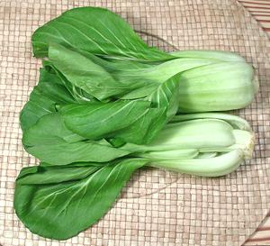
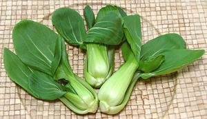

Shanghai Bok Choy / Green Bok Choy
Bok Choy is not a cabbage, it is turnip greens. All versions feature
a sharper flavor with thicker, crisper stems than
Napa Cabbage (also a turnip green). The
White Stemmed varieties are very popular
in stir fries and soups, while Shanghai Bok Choy is often steamed whole
or split lengthwise. Bok choy does not form tight heads but the clusters
of stems form a tight bundle
Shanghai Bok Choy

[Green Bok Choy; Baby Bok Choy (North American groceries);
Qing Cai (Shanghai Chinese, lit. "Green Vegetable"); Pak Kwang Tung
Hong Tae (Thai); Cai Bo Xoi (Viet); Chingensai (Japanese);
Brassica rapa Group Chinensis]
This Turnip Green is probably the most popular vegetable in the Shanghai
region (Zhejiang), and is now widely available in North American
produce and supermarkets. It's smaller than the white stemmed bok choy
they sell, so supermarkets, always anxious to snag the yuppie dollar,
call it "baby bok choy". Hey, yuppies buy "baby carrots" (machine made
from large carrots) and bags of bland "baby spinach", so "baby" anything
should sell, right?
The flavor of this bok choy is distinctly different from that of
the white stemmed variety. Besides being light green, the leaf stems are
much thinner and more tender. This variety is better suited to steam
whole or split lengthwise as the stems cook almost as quickly as the
greens.
Shanghai Bok Choy Mui

[Qing Cai Mui (Shanghai Chinese); Sin Kon Choy Mui (market)]
This is the "Mui" form of the Shanghai Bok Choy described above.
It is becoming much more available in the Asian markets, and is very
popular in southern China, especially for cooking whole. It is not a
"baby" plant, but a dwarf variety that is fully mature and may have
flower buds. The photo specimens were sold as Sin Choy Mui by
a market in Los Angeles (San Gabriel) that uses a mix of Chinese and
Vietnamese names. These were up to 5-1/2 inches long and average weight
was 0.66 ounces each.
More on Asian Greens .
Buying:
Most North American produce and supermarkets
now carry the full size Shanghai Bok Choy as "Baby Bok Choy". The "Mui"
version can be found only in Asian markets. See that the heads are
firm and the leaves are not yellowing, spotted or off color. Such
leaves must be discarded, but once it starts, yellowing wil proceed
rapidly.
Storing:
Loosely wrapped in plastic and refrigerated,
they will keep several days and then start to turn yellow. Yellowing
leaves have lost their flavor.
Cooking:
Shanghai Bok Choy, if not too large, is often
steamed whole or split lengthwise, usually by steaming. Since the stems
quite tender they don't need to be cooked separately. It can also be
used in stir fries and other recipes the same way as the white stemmed,
but give the stems less lead time over the leaves, if any. For any
method, do not overcook.
Health and Nutrition
Bok Choys are considered a very
healthy, nutritious green, and suspected of anti-cancer properties
due to containing Glucosinolate. Due to the glucosinolate, Bok Choy
can be toxic to people already seriously ill - but it takes about 2
to 3 pounds a day, every day, to be dangerous.
cb_boksz 161226 - www.clovegarden.com
©Andrew Grygus - agryg@clovegarden.com - Photos on this
page not otherwise credited are © cg1 -
Linking to and non-commercial use of this page permitted